Contexte
Comme établi par la loi REEN (Réduction de l’Empreinte Environnementale du Numérique), les services publics devraient dès cette année être soumis à des obligations d’écoconception, décrites par le RGESN (Référentiel Général d’Écoconception de Services Numériques). La version finale de ce référentiel devrait sortir ces prochaines semaines. Il restera alors à attendre le décret d’application afin de connaître précisément ce qui sera attendu. C’est donc l’occasion idéale de proposer une nouvelle étude afin de remesurer l’ensemble des sites de l’étude de 2020 et de voir quelles tendances se dessinent.
Même si nous n’avons pas encore la version finale du RGESN, celui-ci se dessine dans ses versions existantes comme un outil permettant de structurer une démarche d’écoconception, au-delà de l’estimation de l’écoconception d’un service numérique. Mesurer la page d’accueil d’un site ne permet en aucun cas de définir directement l’écoconception d’un site et encore moins sa conformité au RGESN. Toutefois, il s’agit toujours là d’une bonne première approche afin de se faire une première idée de la sensibilité de la structure au sujet de l’écoconception.
Le RGESN est déjà utilisé chez Greenspector et nous partagerons ultérieurement nos recommandations concernant la place des mesures dans une démarche de mise en conformité au référentiel, notamment via la mise en place d’une démarche d’amélioration continue.
Méthodologie
Les mesures initiales de 2020 ont été menées sur un smartphone Samsung Galaxy S7 sous Android 8.
Les remesures de 2022 (villes et métropoles) quant à elles ont été effectuées sur un smartphone Samsung Galaxy S9 sous Android 10. Les mesures ont été réalisées au travers de notre outil Greenspector Benchmark.
Le scénario de mesure est le suivant :
- Chargement de l’application
- Lecture du site web en premier plan
- Lecture de la page avec scroll
- Inactivité du site web en arrière-plan
Chaque mesure est la moyenne de 3 mesures homogènes (avec un écart-type faible). Pour chacune des itérations, le cache est préalablement vidé.
Découvrez comment Greenspector évalue l’impact environnemental des services numériques.Différentes hypothèses ont été prises pour la projection environnementale :
- 100 % des utilisateurs et serveurs localisés en France
- Répartition des terminaux utilisateurs (source : https://datareportal.com/reports/digital-2023-france [EN]) :
- 50% sur smartphone
- 3 % sur tablette
- 47 % sur PC
Pour plus de détails sur le calcul de l’EcoScore utilisé par Greenspector, se reporter à l’article dédié : /ressources/blog/comment-est-calcule-lecoscore-dans-le-cas-dun-benchmark-web-ou-mobile/
Limites
Cette année, il s’est avéré impossible de remesurer deux des sites de l’échantillon :
- Ministère de la Santé
- Ministère du Travail
Il faut noter que ces ministères ont été fusionnés à la suite du remaniement de début 2024 pour devenir le ministère du Travail, de la Santé et des Solidarités. Les deux URL existantes pointent donc vers le même site, lequel présente d’ailleurs a priori quelques soucis d’optimisation côté Javascript (voir un article Linkedin que j’avais publié à ce sujet).
Le site https://corse.fr a disparu au profit du site https://www.isula.corsica/.
Résumé des épisodes précédents
En 2020, nous vous avions proposé un premier article comparant les sites web de différentes collectivités :
- 29 Villes
- 21 Départements
- 12 Régions
- 18 Agences de l’État
- 16 Ministères
- 17 Métropoles
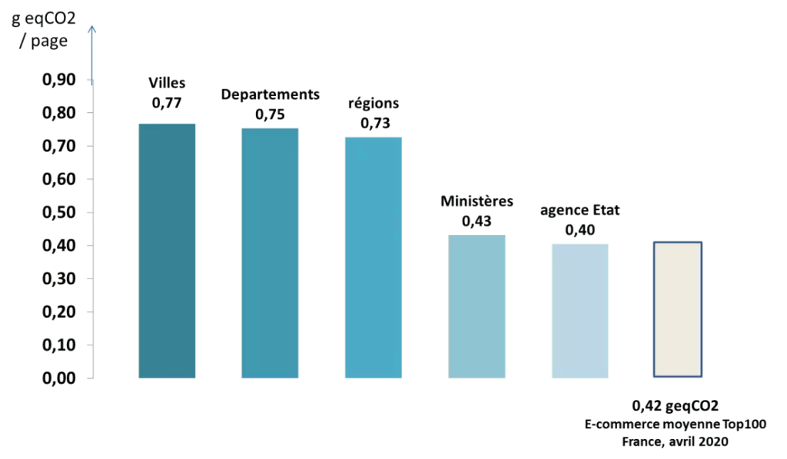
Projection environnementale (gaz à effet de serre) par catégorie de site (2020)
L’idée était d’établir un premier état des lieux. Les résultats étaient assez disparates (ce qui est habituel sur ce type d’étude), avec encore une belle marge de progression. Ainsi, nous avions donc un point de comparaison pour des études ultérieures.
À la suite de l’arrivée de la loi REEN fin 2021, les communes et intercommunalités de plus de 50 000 habitants sont contraintes d’établir une stratégie autour du Numérique Responsable avant 2025. C’est donc tout naturellement que nous avons lancé en 2022 une nouvelle étude dédiée cette fois aux villes et métropoles.
| Ecoscore | Energie | CPU | Données (Mo) | Mémoire | Requêtes HTTP | Impact carbon (gEqCO2) | Empreinte Eau (Litres) | Empreinte sol (m2) | |
|---|---|---|---|---|---|---|---|---|---|
| Moyenne générale mesure | 42 | 5,72 | 2,97 | 7,91 | 672 | 114 | 0,56 | 0,074 | 0,693 |
| Moyenne générale remesure | 58 | 5,65 | 1,31 | 7,14 | 738 | 92 | 0,51 | 0,070 | 0,673 |
Et aujourd’hui ?
| Ecoscore | CPU (%) | Mémoire (Mo) | Énergie (mAh) | Données (Mo) | Requêtes HTTP | Impact GES (gCO2) | Impact eau (L) | Occupation des sols (cm²) | |
|---|---|---|---|---|---|---|---|---|---|
| Moyennes 2024 | 52,84 | 1,02 | 851,14 | 5,46 | 5,18 | 73,39 | 1,00 | 0,17 | 1,84 |
| Moyennes 2020 | 46,58 | 2,81 | 634,07 | 5,18 | 5,47 | 99,34 | 1,30 | 0,22 | 2,42 |
Pour 2024, nous avons donc choisi de remesurer l’ensemble des sites de 2020 : ministères, agences d’état, régions, départements, métropoles et villes. Ces remesures ont été lancées dans les mêmes conditions qu’en 2022 (mesures sur Samsung S9 plutôt que Samsung S7).
L’EcoScore moyen pour l’ensemble des sites mesurés ici est passé de 46,58 à 52,84.
Même si les métriques restent élevées, on note une amélioration entre 2020 et 2024.
Alors que les structures publiques devront bientôt répondre à des obligations d’écoconception de leurs services numériques, il semblerait que des efforts restent nécessaires.
Mais voyons tout ceci plus en détail.
Résultats obtenus
Le tableau compilant l’ensemble des résultats au cours des remesures effectuées cette année est présenté plus loin dans l’article. Commençons par examiner l’évolution par catégorie de sites.
Ministères
Pour les sites qu’il a été possible de remesurer en 2024, on constate l’évolution suivante :
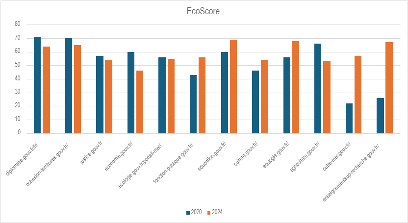
Évolution de l’EcoScore entre 2020 et 2024
On constate une certaine disparité au niveau des scores mais aussi de leur évolution. Toutefois, dans le cas de l’Outre-Mer et de l’Enseignement Supérieur, la hausse est très importante (ce qui laisse imaginer une refonte complète de ces deux sites, ou en tout cas un remaniement conséquent). Nous les analyserons donc plus en détail par la suite.
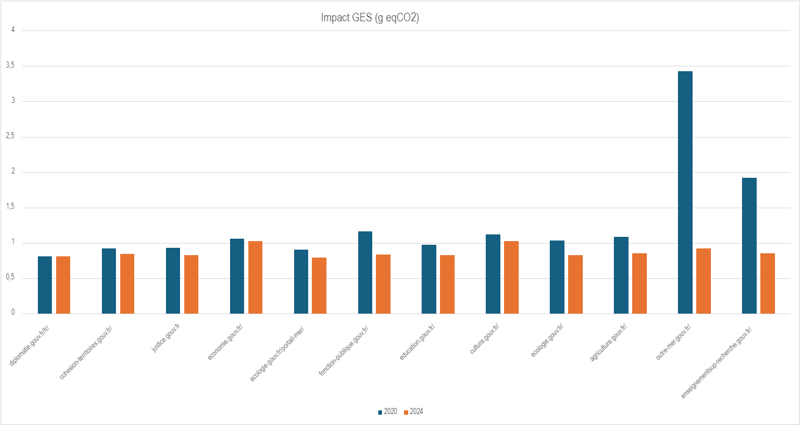
Évolution des émissions de GES (gaz à effet de serre) entre 2020 et 2024
On constate une tendance globale à la diminution des gaz à effet de serre, ce qui est une très bonne nouvelle.
| Ecoscore | CPU (%) | Énergie (mAh) | Données (Mo) | Requêtes HTTP | Impact GES (gCO2) | |
|---|---|---|---|---|---|---|
| Moyennes 2020 | 52,75 | 2,23 | 5,11 | 4,07 | 94,67 | 1,28 |
| Moyennes 2024 | 59,00 | 0,81 | 5,01 | 2,41 | 49,08 | 0,87 |
L’évolution des moyennes confirme une tendance globale à l’amélioration sur l’ensemble des métriques et indicateurs, ce qui est très encourageant.
Analyse rapide
Le site du ministère de l’Enseignement Supérieur et de la Recherche (https://www.enseignementsup-recherche.gouv.fr/fr) ainsi que celui du ministère de l’Intérieur et des Outre-Mer (https://www.outre-mer.gouv.fr/) montrent une amélioration significative de leur EcoScore (corrélée à une forte diminution de leurs impacts environnementaux).
Page d’accueil du site du ministère de l’Enseignement Supérieur et de la Recherche
Il apparaît que ces deux sites ont bénéficié d’une refonte par la société ISOBAR / Dentsu Creative, en s’appuyant sur Drupal.
De façon malheureusement assez classique, les deux sites souffrent d’images insuffisamment optimisées (format et taille) ainsi que d’un manque d’optimisation des polices. Une fois ces optimisations mises en place et automatisées, il sera plus facile d’investiguer plus en détail pour trouver d’autres pistes d’amélioration.
Agences de l’État
Entre 2020 et 2024, on constate l’évolution suivante :
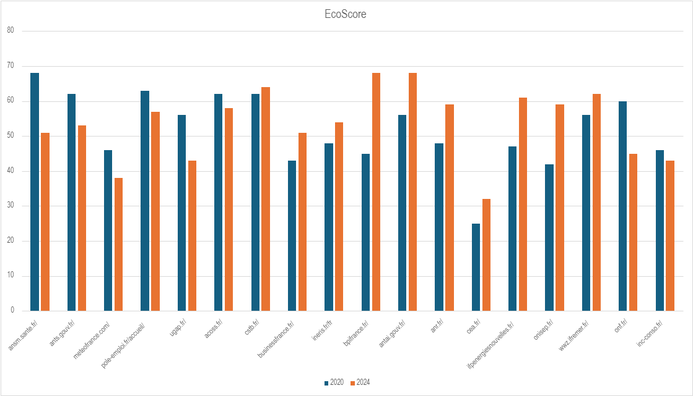
Évolution de l’EcoScore entre 2020 et 2024
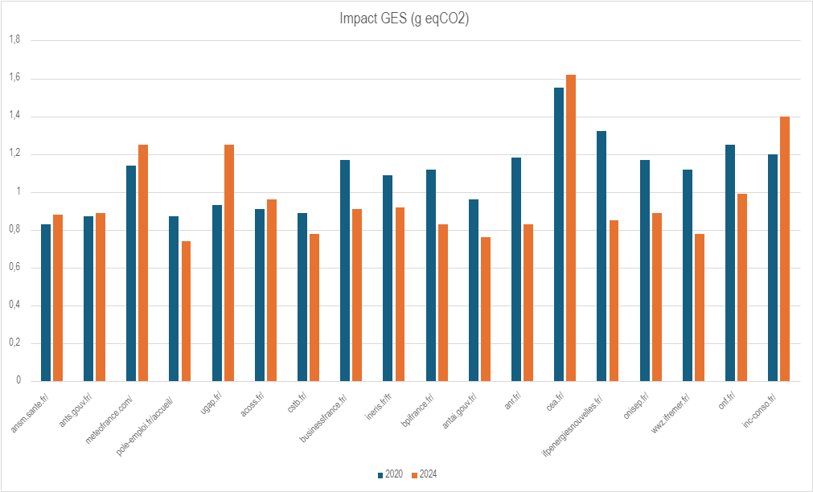
Évolution des émissions de GES (gaz à effet de serre) entre 2020 et 2024
Il y a là aussi une certaine disparité entre les EcoScores (et émissions de GES) mais aussi leur évolution.
| Ecoscore | CPU (%) | Énergie (mAh) | Données (Mo) | Requêtes HTTP | Impact GES (gCO2) | |
|---|---|---|---|---|---|---|
| Moyennes 2020 | 51,94 | 2,75 | 4,40 | 3,44 | 73,78 | 1,09 |
| Moyennes 2024 | 53,67 | 1,17 | 5,59 | 5,00 | 57,11 | 0,97 |
Si l’on constate une légère amélioration sur certains indicateurs, l’énergie et les données tendent à augmenter, ce qui devrait être évité. Plus particulièrement, nous sommes ici sur un échantillon assez restreint de sites (18 en tout). Les indicateurs trop élevés de certains (en particulier l’Institut National de la Consommation et le CEA) impactent donc fortement les moyennes obtenues. Surtout que, dans ces deux cas, l’augmentation des données transférées est conséquente (la valeur est doublée voire triplée par rapport à 2020).
Analyse rapide
La baisse de l’EcoScore apparaît particulièrement marquée pour le site de l’ANSM (https://ansm.sante.fr/). On remarque déjà un carrousel en défilement automatique dès l’affichage du site. Deux autres se trouvent plus bas sur la même page (ce qui est une mauvaise pratique tant pour les impacts environnementaux que pour l’accessibilité). La suppression (ou refonte) de ces composants permettrait dans un premier temps de réduire l’impact sur le CPU donc sur la batterie du terminal utilisateur, réduisant ainsi les impacts environnementaux.
Les images sont plutôt légères. De même pour les polices de caractères mais les fichiers chargés sont trop nombreux.
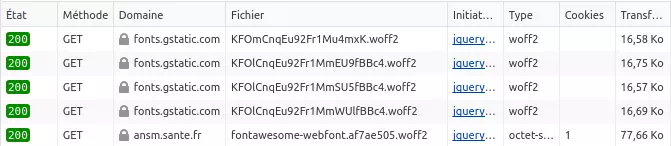
Extrait des DevTools de Firefox, onglet Réseau
Il semblerait que l’un des fichiers soit chargé 3 fois, ce qui devrait être évité. Plus généralement, il faudrait privilégier les polices système mais aussi éviter de charger les polices Google directement depuis leur site d’origine (risque lié au RGPD : https://gomakethings.com/google-fonts-and-gdpr/ [EN]). Pour ce qui est FontAwesome, il serait préférable de ne charger que les icônes réellement utilisées.
Au passage, l’outil Wave relève d’ailleurs plusieurs erreurs d’accessibilité (boutons aux libellés non-explicites, images sans alternative textuelle, contraste de couleurs insuffisant, etc).
Page d’accueil du site de Bpifrance
Inversement, le site de BPI France (https://www.bpifrance.fr/) montre une amélioration notable. Ceci semble être lié à une refonte. Le site apparaît plutôt léger, même si (là aussi) les polices devraient être davantage optimisées (privilégier les polices système, éviter d’intégrer les polices Google depuis leur serveur d’origine, etc). Ici aussi, Drupal a été utilisé.
Il semblerait qu’il y ait eu ici une vraie volonté d’écoconcevoir le site. Il aurait donc été intéressant de présenter une déclaration d’écoconception (ainsi que des éléments relatifs à l’accessibilité).
Régions
Entre 2020 et 2024, on constate l’évolution suivante :
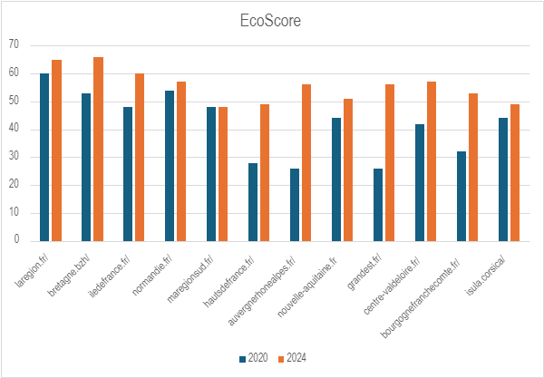
Évolution de l’EcoScore entre 2020 et 2024
La tendance pour l’EcoScore est globalement à l’amélioration, ce qui est une très bonne chose. Dans certains cas, cette amélioration est même très conséquente (Hauts-de-France, Auvergne-Rhône-Alpes, Grand-Est et Bourgogne-France-Comté). Mention spéciale pour la région Bretagne qui obtient le meilleur EcoScore, du fait d’une démarche d’écoconception déjà bien entamée, notamment sur le portail de services (niveau Argent du certificat de sobriété Greenspector) mais aussi d’engagements pris dans le cadre du label Numérique Responsable de l’INR.
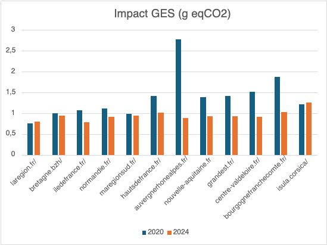
Évolution des émissions de GES (gaz à effet de serre) entre 2020 et 2024
La tendance à l’amélioration, constatée avec l’EcoScore, se confirme ici avec notamment une réduction notable des émissions de GES pour la région Auvergne-Rhône-Alpes (ARA). Nous analyserons donc rapidement ce site par la suite.
| Ecoscore | CPU (%) | Énergie (mAh) | Données (Mo) | Requêtes HTTP | Impact GES (gCO2) | |
|---|---|---|---|---|---|---|
| Moyennes 2020 | 42,08 | 3,36 | 5,46 | 6,48 | 109,17 | 1,38 |
| Moyennes 2024 | 55,58 | 0,87 | 5,17 | 2,83 | 73,67 | 0,94 |
L’évolution des moyennes confirme une tendance forte à l’amélioration sur l’ensemble des métriques et indicateurs, ce qui est très encourageant. Les résultats pourraient être encore meilleurs et il reste à voir si les gains obtenus sont plutôt liés à de la sobriété, de la frugalité ou de l’efficience. Dans tous les cas, ce pourrait être signe d’une démarche d’amélioration continue qui se met en place.
Analyse rapide
Si plusieurs sites montrent une amélioration notable de l’EcoScore, celui d’ARA (https://auvergnerhonealpes.fr/) est aussi celui pour lequel les émissions de GES diminuent le plus.
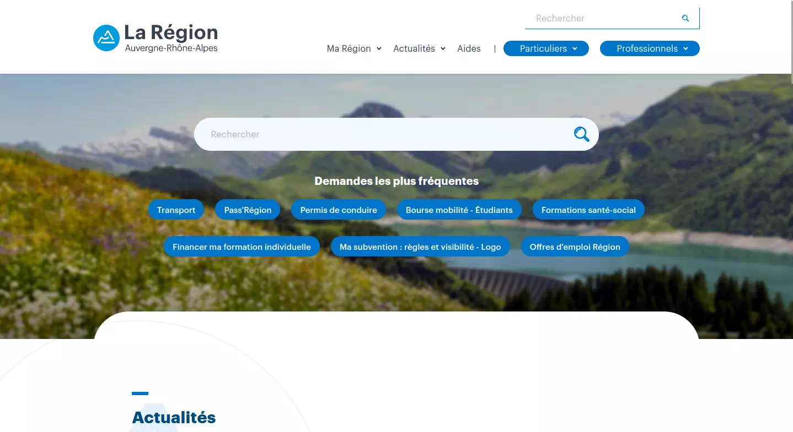
Page d’accueil du site de la région Auvergne-Rhône-Alpes
On note plusieurs éléments très positifs sur ce site : son apparence plutôt sobre et son poids relativement faible. Il est regrettable que certaines images ne soient pas suffisamment optimisées, de même que les polices de caractères. Même si ces bonnes pratiques semblent déjà très répandues et totalement acquises par ceux qui s’intéressent à l’écoconception, leur adoption n’est malheureusement pas encore systématique. Vous pouvez trouver des éléments plus détaillés à ce propos dans le chapitre Sustainability du Web Almanac (en particulier ici : https://almanac.httparchive.org/en/2022/sustainability#image-optimization [EN]) ou dans celui consacré aux polices : https://almanac.httparchive.org/en/2022/fonts [EN]
Là aussi, le site semble avoir été réalisé avec Drupal. S’il n’est pas garanti qu’un site créé avec Drupal respecte automatiquement toutes les bonnes pratiques d’écoconception, il est intéressant de noter ici que de plus en plus d’agences se tournent vers cette solution. Il est agréable de noter que les ressources sur les liens entre écoconception et Drupal se multiplient, même si la plupart sont aujourd’hui en anglais :
- Description assez détaillée de ce qui peut être fait pour réduire les impacts environnementaux d’un site créé avec Drupal : https://salsa.digital/insights/drupal-co2-a-complete-drupal-self-help-guide-to-reducing-your-websites-carbon-footprint-and-impact-on-the-environment [EN]
- Exporation plus générale des avancées de la communauté Drupal sur le sujet de l’écoconception : https://www.tag1consulting.com/blog/exploring-drupals-sustainability-project-ganders-ability-help-and-how-you-can-too [EN]
Comme d’autres outils très utilisés, Drupal s’inscrit dans une démarche globale de réduction de ses impacts environnementaux (https://www.drupal.org/project/sustainability [EN]).
Départements
Entre 2020 et 2024, on constate l’évolution suivante :
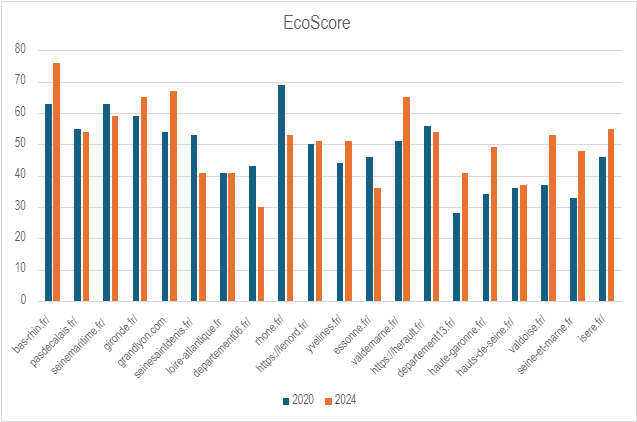
Évolution de l’EcoScore entre 2020 et 2024
La tendance pour l’EcoScore est globalement à l’amélioration, avec des progrès significatifs sur certains sites (Seine-et-Marne, Val d’Oise, etc) mais aussi quelques dégradations qui peuvent étonner de prime abord (Rhône, Alpes-Maritimes). Nous creuserons cela de façon plus approfondie par la suite.
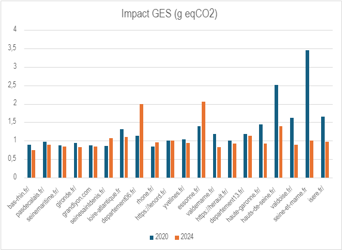
Évolution des émissions de GES (gaz à effet de serre) entre 2020 et 2024
La tendance à l’amélioration, constatée avec l’EcoScore, se confirme ici avec une réduction notable des émissions de GES pour le site de la Seine-et-Marne et des Hauts-de-Seine. Inversement, ces émissions augmentent considérablement pour les Alpes-Maritimes et l’Essonne.
| Ecoscore | CPU (%) | Énergie (mAh) | Données (Mo) | Requêtes HTTP | Impact GES (gCO2) | |
|---|---|---|---|---|---|---|
| Moyennes 2020 | 48,05 | 2,85 | 5,18 | 6,24 | 91,85 | 1,31 |
| Moyennes 2024 | 51,30 | 0,95 | 5,55 | 7,85 | 79,65 | 1,07 |
L’évolution des moyennes reflète une amélioration des divers indicateurs, à l’exception de l’énergie et des données qui se dégradent.
Analyse rapide
L’amélioration constatée pour le site de la Seine-et-Marne (https://seine-et-marne.fr/fr) est importante. Comme pour le site de Limoges (voir plus loin), l’éditeur est ici Stratis. Le site apparaît plutôt léger même s’il est regrettable qu’il ne soit pas davantage accessible. Lorsqu’on observe les requêtes effectuées, plusieurs éléments étonnants apparaissent :
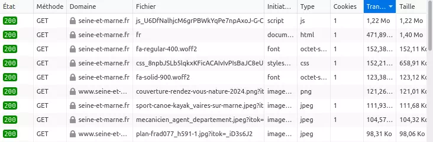
Extrait des DevTools de Firefox, onglet Réseau
- FontAwesome (police d’icônes) est utilisée mais il faudrait se limiter aux caractères véritablement utilisés sur le site. D’autant plus que les fichiers utilisés ne sont pas compressés côté serveur.
- De même, le fichier le plus volumineux est un fichier JS qui n’est pas compressé côté serveur et dont une bonne partie est probablement non-utilisées (ce qui est facilement vérifiable avec l’outil Coverage des DevTools de Chrome).
- Quelques images pourraient être davantage être optimisées, notamment en les convertissant au format WebP
- Le fichier HTML apparaît très volumineux.
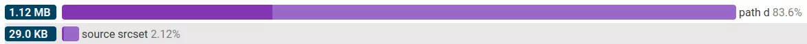
Analyse de la page HTML avec l’outil de DebugBear
L’essentiel du poids du HTML correspond apparemment à des SVG (images vectorielles) intégrées directement à celui-ci. Si cette pratique permet de réduire le nombre de requêtes HTTP, elle risque ici de ralentir considérablement le chargement initial de la page, dans la mesure où le fichier HTML (que l’on récupère en premier) s’en retrouve bien alourdi.
Il s’agit une fois de plus d’un site réalisé avec Drupal.
La dégradation pour le site des Alpes-Maritimes (https://www.departement06.fr/departement-des-alpes-maritimes-3.html) est conséquente.
Ce site apparaît très lourd (plus de 10 Mo pour l’ensemble de la page d’accueil). Là aussi, on retrouve des soucis d’optimisation sur certaines images ainsi que sur les polices (7 fichiers rien que pour la police Roboto). Certains gains pourraient être réalisés via la compression côté serveur.
Plus généralement, il faudrait réduire le nombre de requêtes dont la majeure partie sont liées à des images. Ceci pourrait passer par une plus grande sobriété sur la page d’accueil, qui présente énormément d’éléments, peut-être trop pour que les utilisateurs s’y retrouvent facilement.
Métropoles
Entre 2020 et 2024, on constate l’évolution suivante :
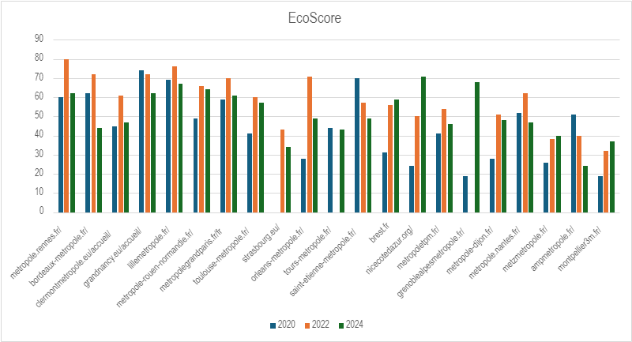
Évolution de l’EcoScore entre 2020 et 2024
On remarque déjà que certains sites n’ont pas pu être systématiquement remesurés.
Pour plusieurs sites, une amélioration notable était constatée entre 2022 puis une dégradation en 2024. Faute d’informations supplémentaires, nous ne pouvons que spéculer sur les causes : peut-être une refonte d’un site suivie d’une dégradation progressive ? Ceci semble souligner dans tous les cas une anomalie dans la démarche d’amélioration continue.
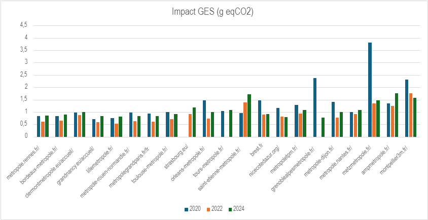
Évolution des émissions de GES (gaz à effet de serre) entre 2020 et 2024
Les tendances observées pour l’EcoScore se confirment ici. En complément, les sites de la Métropole de Grenoble et celle de Metz bénéficient d’une réduction considérable de leurs émissions de GES entre 2020 et 2024.
Il est intéressant de noter que celui de la métropole de Montpellier s’améliore au fil du temps, même si le résultat pourrait être encore meilleur.
| Ecoscore | CPU (%) | Énergie (mAh) | Données (Mo) | Requêtes HTTP | Impact GES (gCO2) | |
|---|---|---|---|---|---|---|
| Moyennes 2020 | 44,60 | 2,63 | 5,46 | 5,36 | 110,80 | 1,33 |
| Moyennes 2022 | 58,47 | 1,37 | 5,72 | 7,58 | 95,16 | 0,89 |
| Moyennes 2024 | 51,38 | 1,10 | 5,53 | 6,29 | 86,24 | 1,06 |
L’évolution des moyennes reflète les constats effectués sur l’EcoScore : une amélioration significative en 2022 puis une nouvelle dégradation en 2024. Seules les requêtes HTTP et l’utilisation du CPU diminuent dans tous les cas, ce qui est une bonne chose.
Analyse rapide
Le site de Metz Métropole (https://www.eurometropolemetz.eu/) s’est amélioré.
Pour autant, tout n’est pas parfait. En arrivant sur le site, on découvre une vidéo en lecture automatique ainsi qu’une animation qui tourne en boucle sur le champ de recherche.
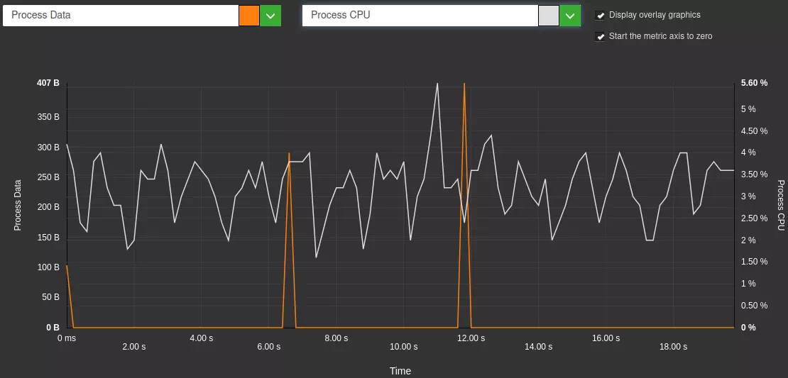
Visualisation de l’étape de pause après chargement de la page, Greenspector Studio
Ces deux facteurs ont un fort impact sur le CPU du terminal utilisateur (la fluctuation est liée à la modification cyclique de l’affichage pour la vidéo et l’animation). De plus, ces choix de conception sont regrettables du point de vue de l’accessibilité.
De façon assez classique, les images pourraient être davantage optimisées, de même que les polices (7 fichiers rien que pour la police Raleway).
Les indicateurs du site de la métropole de Saint-Étienne (https://www.saint-etienne-metropole.fr/) se dégradent au fil du temps. Le chargement du site apparaît particulièrement long, en raison notamment de nombreuses images, certaines pesant plusieurs Mo (de façon analogue à ce qu’on avait pu constater en 2022 sur le site de la métropole de Montpellier). L’optimisation (de préférence) automatique de ces images permettrait d’obtenir des gains rapidement et facilement pour pouvoir ensuite aller vers d’autres problématiques (gestion des polices mais surtout sobriété).
Notons qu’il s’agit là aussi d’un site Drupal mais où l’optimisation technique n’a pas été aussi poussée que pour d’autres sites vus précédemment.
Villes
Entre 2020 et 2024, on observe l’évolution suivante :
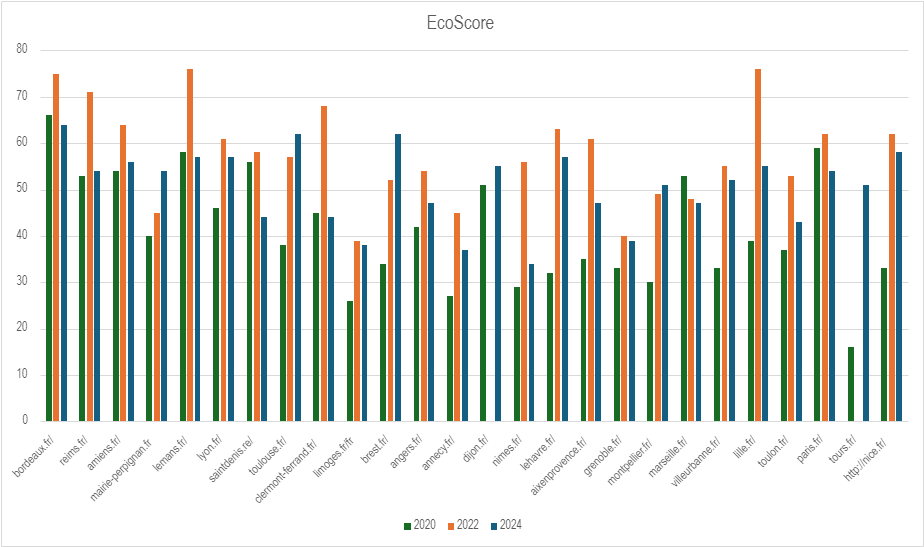
Évolution de l’EcoScore entre 2020 et 2024
Comme pour les métropoles, on constate ici à plusieurs reprises une amélioration de l’EcoScore en 2022 puis une dégradation en 2024. Il sera intéressant d’effectuer les mesures plus régulièrement pour avoir une meilleure vision globale de leur évolution.
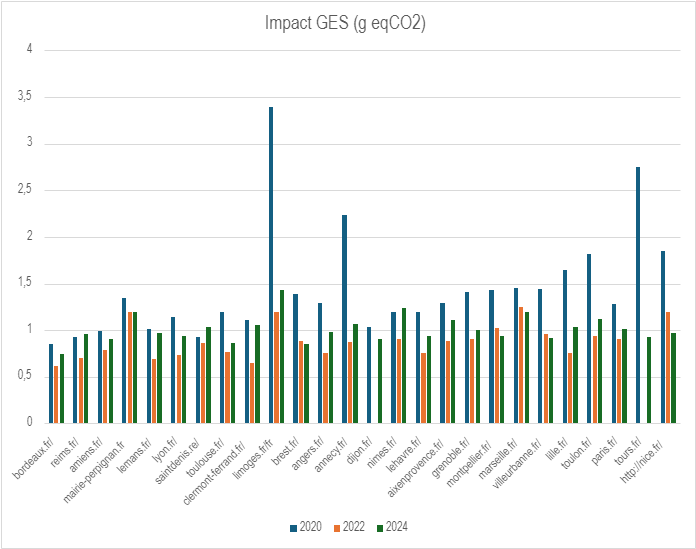
Évolution des émissions de GES (gaz à effet de serre) entre 2020 et 2024
Les tendances observées pour l’EcoScore se confirment ici. On observe d’ailleurs quelques fortes diminutions des émissions de GES, notamment pour les sites des villes de Limoges, Annecy et Tours.
| Ecoscore | CPU (%) | Énergie (mAh) | Données (Mo) | Requêtes HTTP | Impact GES (gCO2) | |
|---|---|---|---|---|---|---|
| Moyennes 2020 | 40,96 | 3,12 | 5,64 | 6,86 | 116,92 | 1,45 |
| Moyennes 2022 | 57,92 | 1,27 | 5,59 | 6,41 | 92,13 | 0,88 |
| Moyennes 2024 | 50,73 | 1,07 | 5,58 | 4,25 | 77,12 | 1,01 |
En définitive, si on compare 2020 et 2024, on constate une amélioration de l’Ecoscore mais aussi des autres indicateurs. Si l’on regarde l’EcoScore et les émissions de GES, le contraste est moins prononcé qu’entre 2020 et 2022. Toutefois, ceci souligne bien une tendance globale à l’amélioration.
Précisions
Sur les villes et métropoles (qui sont les seuls sites à avoir été remesurés en 2022), on constate une amélioration entre 2020 et 2022 puis une dégradation forte entre 2022 et 2024.
Plusieurs explications à cela :
- En 2020, les mesures ont été effectuées sur Samsung S7. En 2022, nous avons utilisé un Samsung S9. Le fait que ce soit un téléphone plus récent implique souvent une amélioration des métriques (téléphone plus performant).
- Entre 2022 et 2024, nous avons introduit un changement dans la méthodologie de mesure Greenspector pour le web. Jusque-là, l’étape de référence était mesurée sur un onglet vide de Chrome (onglet principalement blanc). Depuis, nous avons opté pour une étape de référence mesurée sur un onglet de Chrome contenant un fond entièrement noir. Ainsi, pour un écran OLED (comme celui du Samsung S9), la différence est significative et la note (en particulier pour les mesures liées à la décharge de batterie) diminue. Nous préparons à ce sujet une mise à jour de notre article sur l’impact de la couleur affichée sur la consommation énergétique paru en 2017 : /ressources/blog/faut-il-changer-son-fond-decran-pour-consommer-moins-de-batterie/ De plus, il n’est pas exclu que certains sites se soient dégradés entre 2022 et 2024 (ajout de contenus et autres aléas de la maintenance d’un site web).
Analyse rapide
Les émissions de GES liées au site de Limoges (https://www.limoges.fr/) ont grandement diminué, même si l’évolution de l’EcoScore est moins marquée.
Ce site est lui aussi réalisé avec Drupal. Si certaines images pourraient être optimisées davantage, le poids le plus important correspond ici… aux polices de caractères ! Sur plus de 100 requêtes en tout pour afficher le site, une vingtaine correspondent à des polices de caractères. On note ici de nombreux doublons. Des subsets (suppression des caractères non-utilisés) pourraient être créés, notamment dans le cas de FontAwesome.
S’il est intéressant de découper les fichiers de code (notamment CSS) pour pouvoir les gérer plus finement, on compte ici plus de 30 fichiers CSS. Il serait préférable d’en avoir moins (ou en tout cas de ne charger que ceux dont l’utilisateur a réellement besoin).
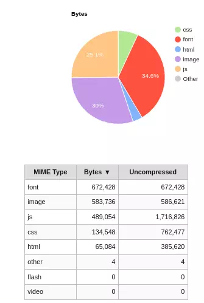
Extrait de l’onglet Content de webpagetest.
Synthèse des résultats
L’ensemble des résultats obtenus lors des mesures et de la projection environnementale pour 2024 sont présentés dans le tableau ci-dessous :
[table “88” not found /]Pour les résultats antérieurs, se reporter aux articles précédents, identifiés en introduction de cet article.
Perspectives et conclusion
Il reste encore du chemin à parcourir pour rendre moins impactant les sites mesurés ici. Comme souvent dans ce type d’études, certaines recommandations faciles à implémenter pourraient constituer une bonne première étape. Il peut s’agir d’optimiser les images ou les polices, voire de limiter l’usage de certains composants animés. Dans tous les cas, une démarche d’amélioration continue doit être mise en place, notamment via des outils de mesure permettant de suivre l’évolution dans le temps. Ceci requiert de choisir soigneusement ce qui est mesuré, de quelle façon et à quelle fréquence, en s’appuyant si possible sur un budget environnemental. En complément, un référentiel de bonnes pratiques (le plus souvent construit à partir des référentiels existants) peut être d’un grand secours.
Ceci coïncide avec un grand défi qui se profile pour les structures publiques françaises : mettre en œuvre le RGESN afin d’améliorer l’écoconception de leurs services numériques mais aussi plus généralement d’initier ou de renforcer leur démarche d’écoconception. Alors même que les efforts se multiplient autour de l’amélioration de l’accessibilité au regard du RGAA, les deux chantiers ne doivent pas être dissociés. En effet, l’accessibilité et l’écoconception sont deux domaines (parmi d’autres) du Numérique Responsable qui s’avèrent être à l’usage mutuellement bénéfiques.
Si votre site n’apparaît pas dans ce classement ou si vous vous interrogez sur les résultats obtenus ou sur comment les améliorer, n’hésitez pas à nous contacter.